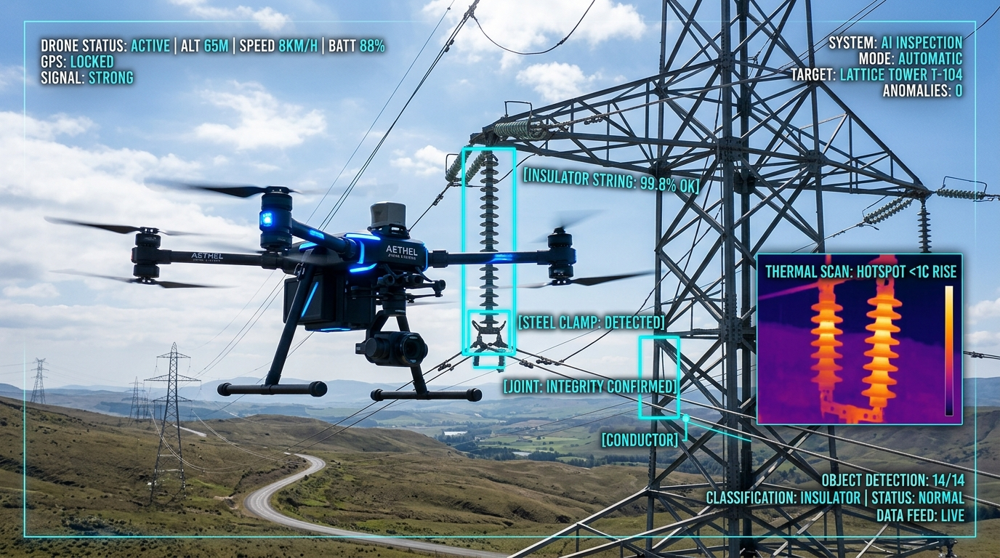

Generators, Distributors & Public Utilities
Key Challenges: Continuous critical infrastructure monitoring, eliminating meter reading errors, agile billing, and preventive maintenance.

Infrastructure Inspection via Computer Vision
Remote MonitoringChallenge: Risky on-site inspection of high-voltage towers, substations, and large-scale solar farms.
Drapiar IT Solution: Processing drone-captured aerial imagery with Computer Vision models to detect thermal anomalies.
Impact & KPIs: 10x faster inspection without risking physical field personnel safety.
Critical Asset Maintenance
ReliabilityChallenge: Unexpected failures in turbines or transformers disrupting public utility service.
Drapiar IT Solution: Vibration and temperature sensors feeding AI models that trigger maintenance orders before failures occur.
Impact & KPIs: Guaranteed operational continuity and substantial contingency cost reduction.

Intelligent Meter Reading
Metering & BillingChallenge: Inaccurate manual field meter readings resulting in customer billing disputes.
Drapiar IT Solution: Mobile app with photometric computer vision OCR validating physical meter displays and populating billing software.
Impact & KPIs: 100% billing based on verified meter readings and elimination of estimated charges.
Field Service Work Order Management
Field ServiceChallenge: Inefficient dispatch of technical crews during emergencies and network repairs.
Drapiar IT Solution: Mobile platform orchestrating technician dispatch based on GPS proximity, spare parts inventory, and SLA urgency.
Impact & KPIs: 50% reduction in fault response times and live interactive map fleet monitoring.